课程回顾｜未来科技与产业创新创业导引课第六课
10月27日，由深圳市清华大学校友会金融投资分会协办的《未来科技与产业创新实践》迎来第六课，围绕具身智能与AI Agent，讨论技术落地与成长期创业中的实践选择。
下午，师生走进云天励飞，了解企业发展与AI应用；晚间，星际光年联合创始人兼COO周佳琪学姐、屿智同行Sprix AI创始人兼CEO张永豪学长回到课堂，分享各自的产品探索与创业经历。
走近AI应用现场
下午，师生走进云天励飞，参加企业交流、参观展厅。同学们听取公司介绍，了解企业发展与业务布局，随后跟随工作人员走近产品与应用展示。
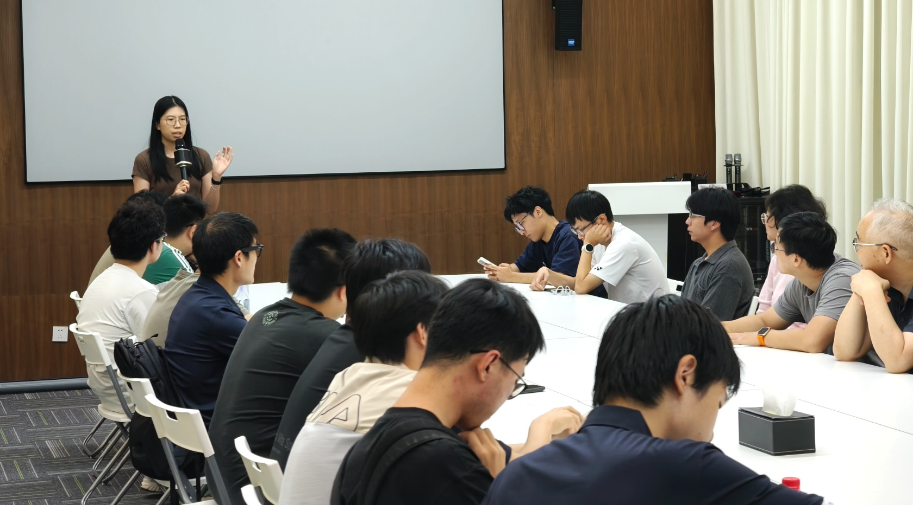
走进展厅，大家沿着企业发展历程与应用展示继续参观。从展陈到产品，同学们在现场听取讲解，了解AI技术面向不同使用场景的探索。
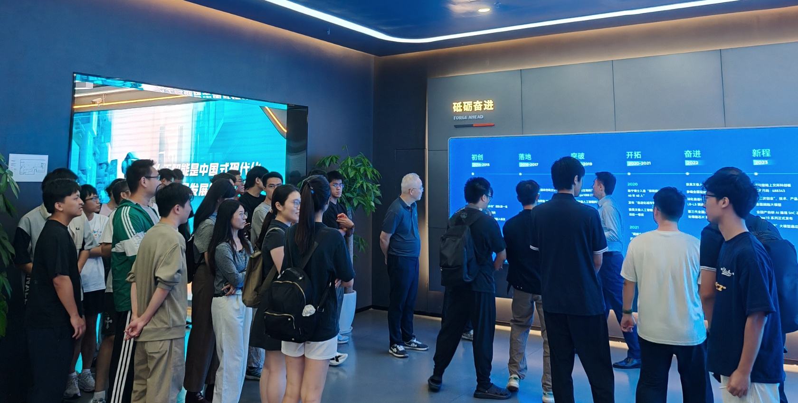
在AI Agent相关产品展示区，同学们近距离观察产品形态与演示内容，进一步关注技术能力如何回应用户需求。
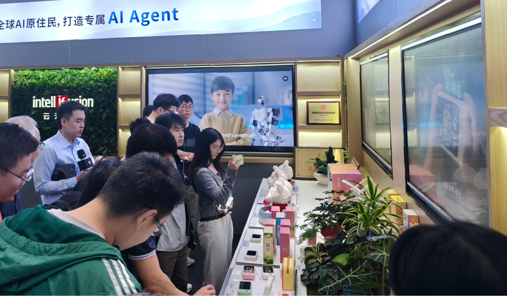
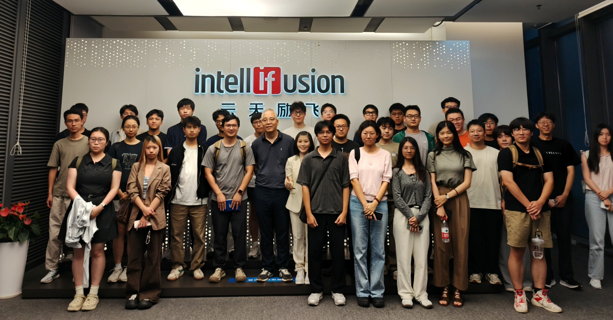
技术路线，回到场景中判断
周佳琪学姐以“具身智能操作平台——技术路线之争与场景落地实践”为题，介绍以灵巧手为硬件基础、结合操作模型的软硬件解决方案。她从一项打印机质检任务讲起，说明技术走出实验室后需要面对的细节。
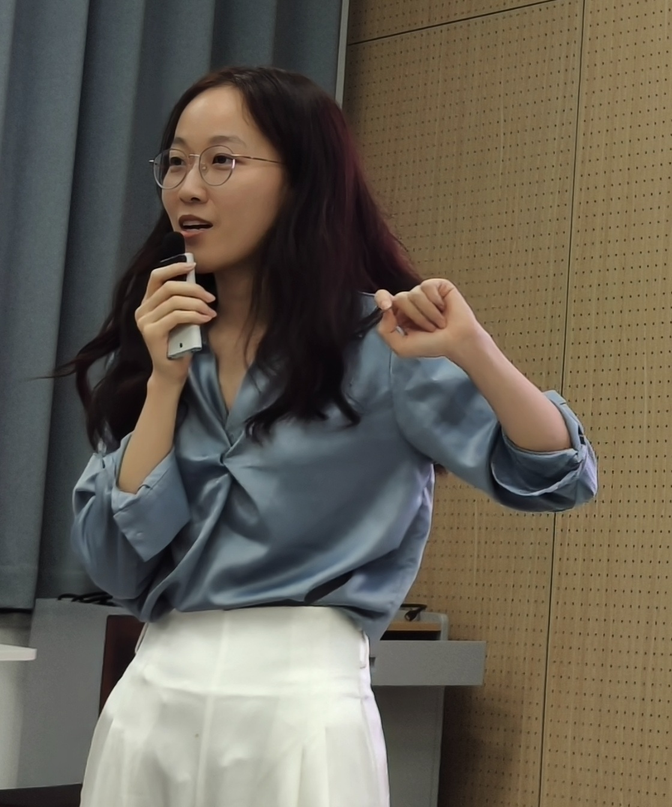
一个看似简单的“拿起墨盒”动作，就可能因物体偏移、触觉反馈与调整速度而反复受阻。她强调，许多问题未必能够形成论文或专利，却直接决定项目能否完成交付。
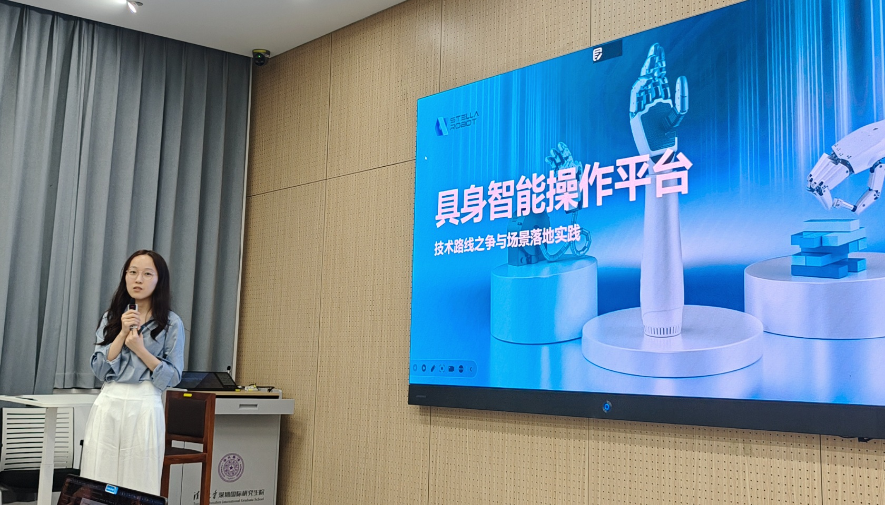
围绕直驱与绳驱路线，她邀请同学们思考：如何兼顾较近的收入与较远的技术目标？不同路线需要投入多少研发资源？技术选择要结合场景、量产节奏与企业自身条件，也要为持续研发保留支撑。
她也谈到，每一轮融资都要有产品、技术或场景进展作支撑。企业成长还需要研发、供应链、市场与运营之间的协同。
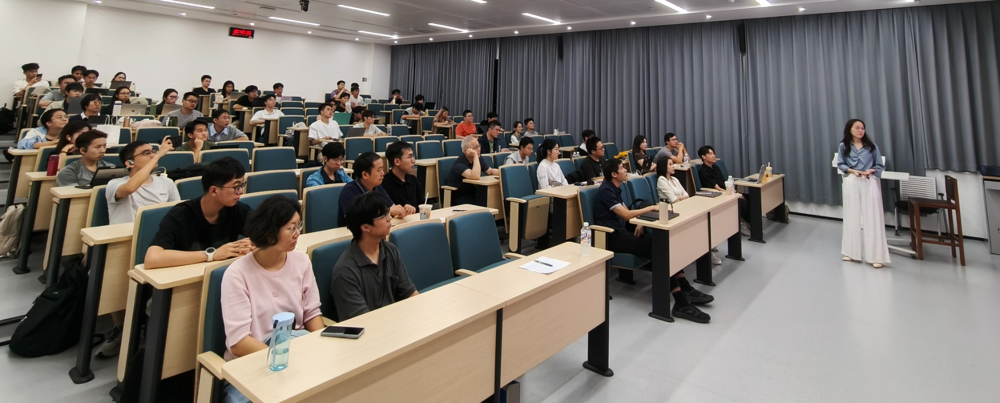
让Agent协作，交付真实结果
张永豪学长以“当AI开始‘接单’——从智能体协作到创业实践”为题，分享Sprix AI的产品思路：评估不同Agent的能力，匹配任务、组织协作，并对交付结果进行检验。
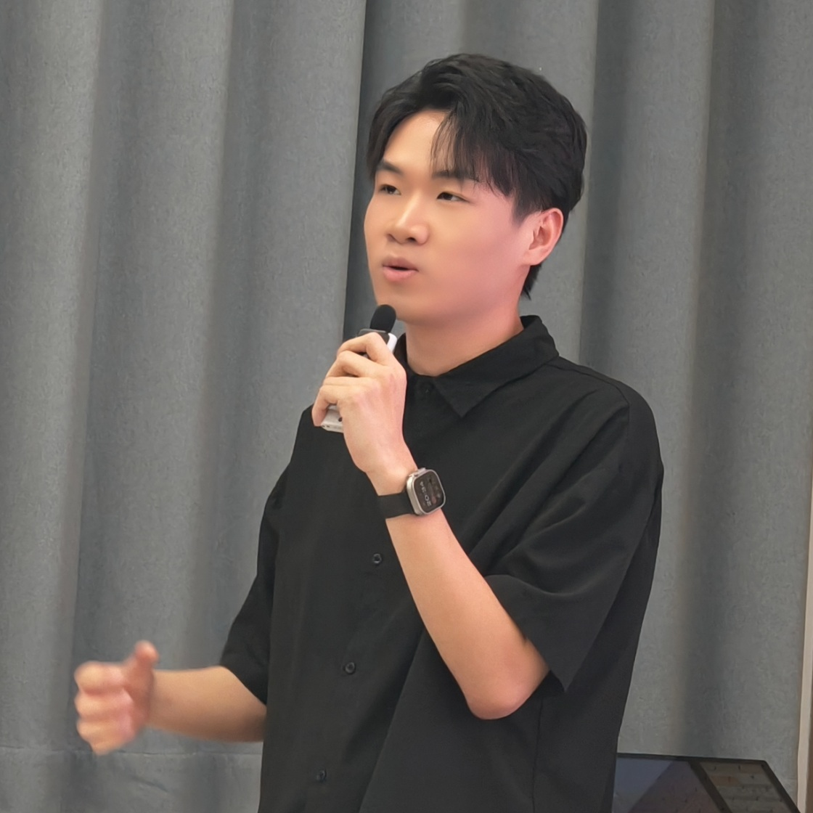
即使使用同一底层模型，不同Agent也会因为积累的数据、工作流程、工具与权限，形成不同的能力。平台需要回答的，既有“谁能做”，也有“怎样把任务交给合适的Agent，以及如何判断完成得好不好”。
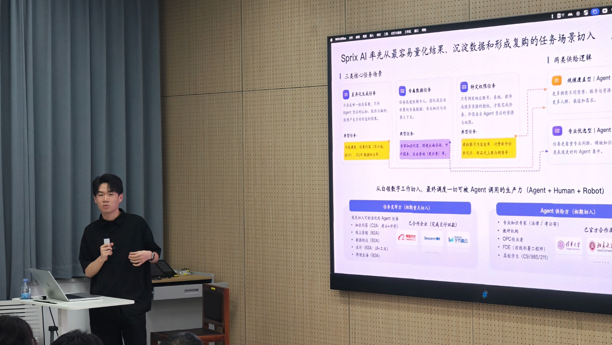
结合创业经历，他还分享了团队互补、客户拓展与融资准备中的经验：围绕具体需求开展验证，用真实任务积累反馈，让产品与商业模式逐步接受市场检验。
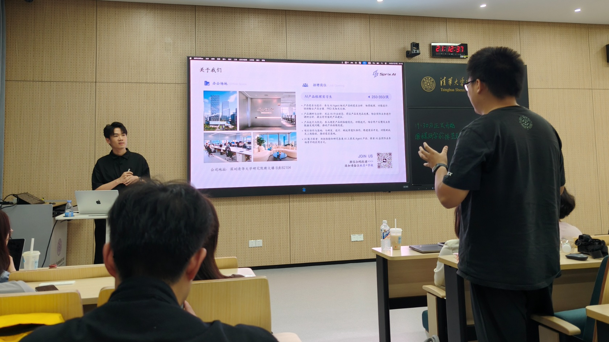
把问题问到实际经营中
提问环节，同学们围绕灵巧手的通用性与专用场景、创业团队分工，以及Agent能力如何量化、交付质量如何保障等问题展开讨论。交流从技术方案延伸到企业经营，也让“创业机会”对应到可以继续研究和验证的具体问题。
课程结束后，课程教师为两位嘉宾颁发授课证书，并合影留念，感谢他们带来的经验与思考。
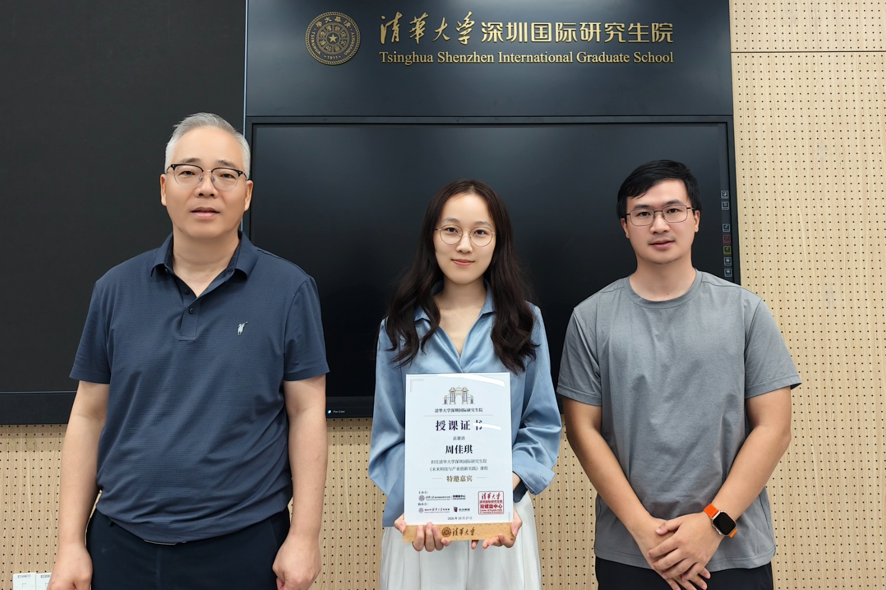
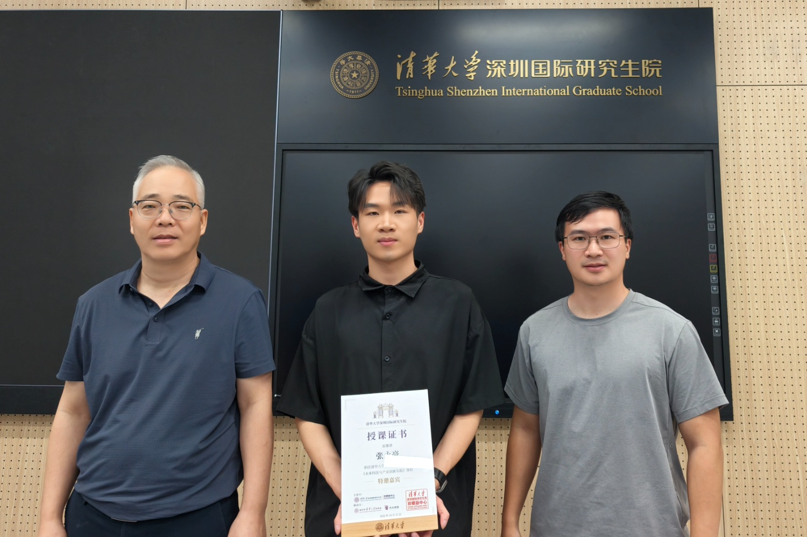
从企业展厅到课堂交流，本次课程让同学们看见：让技术持续创造价值，需要研发积累，也需要需求判断、工程协作与经营能力。
借助深圳市清华大学校友会金融投资分会的协办支持，课程持续连接在校学生与产业一线校友，让关于研究、职业与创业的选择，多一份来自真实实践的参照。
关于课程
《未来科技与产业创新实践》
本课程是一门研究生公共课，设2学分、32课时，共8周。围绕生物医药、材料与先进制造、AI与具身智能等方向，将“前沿理论研讨”与“科创现场调研”相结合，帮助同学们认识科技创新、产业发展与科创生态之间的联系。
一线投资人、企业创始人及高管走进课堂，同学们也走进企业，了解产品、岗位与真实需求，让接下来的学习与研究，多一份来自产业真实问题的牵引。
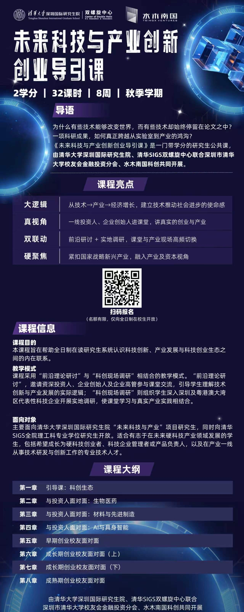